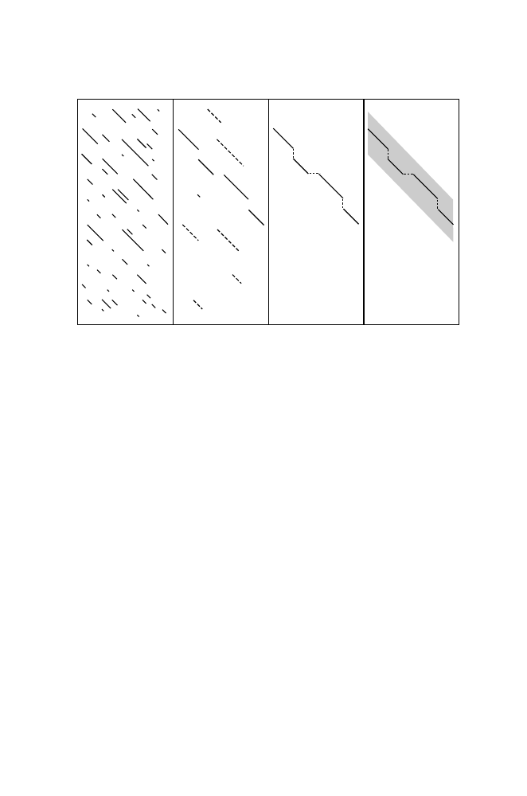

7.4
BLAST
179
I
J
C.
D.
B.
A.
Fig. 7.3.
Illustration of
FASTA
steps 2–5. Panel A: Identify diagonals sharing
k
-
tuples (step 2). Panel B: Rescore to generate initial regions (step 3). Panel C: Join
initial regions to give the combination having maximum score (step 4). Panel D:
Perform dynamic programming in a “window space” or “band” centered around the
highest-scoring initial region (step 5).
strategy. This can be summarized in two parts: the method for finding local
alignments between a query sequence and a sequence in a database, and the
method for producing p-values and a rank ordering of the local alignments
according to their p-values. High-scoring local alignments are called “
high
scoring segment pairs
,” or HSPs. The output of
BLAST
is a list of HSPs
together with a measure of the probability that such matches would occur by
chance.
7.4.1 Anatomy of
BLAST
: Finding Local Matches
First, the query sequence is used as a template to construct a set of sub-
sequences of length
w
that can score at least
T
when compared with the
query. A substitution matrix, containing
neighborhood sequences
, is used
in the comparison. Then the database is searched for each of these neighbor-
hood sequences. This can be done very rapidly because the search is for an
exact match, just as our word processor performs exact searches. We have not
developed such sophisticated tools here, but such a search can be performed in
time proportional to the sum of the lengths of the sequence and the database.
Let’s return to the idea of using the query sequence to generate the neigh-
borhood sequences. We will employ the same query sequence I and search
space J that we used previously (Section 7.2.1):